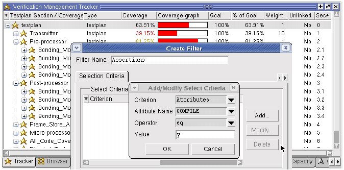

One powerful
feature for tracing verification requirements is the ability to
filter your coverage results by attributes. You can add these attributes
to a testplan for this purpose.
For example, if your original testplan included
such data fields as the engineer responsible for tests, or the priority
level assigned a specific section of the plan, you can add these
as attributes to the imported and merged testplan UCDB and use them
for filtering the coverage results.
Prerequisites
The
user attribute used to filter the data must already exist in the original
plan, or you must add the user attribute to the original plan before
importing it (see “Storing User Attributes in the UCDB”).
The
plan must be imported.
The
plan must be merged with test results.
Procedure
- Select all tests to which
you wish to apply selection criteria.
- Right-click
in the Tracker or Browser window and select .
This opens the Filter Setup
dialog box.
- Select Create.
This opens the Create Filter
dialog box to the Selection Criteria tab.
- Select Add.
This opens the Add/Modify/Select
Criteria dialog box.
Figure 1. Filtering on User Attributes
- For Criterion,
select Attributes from the pulldown list.
- For Attribute Name, select
the desired attribute name(s) from pull-down list. The list contains
all pre-defined attributes and any user attributes you added.
- For Operator, select one of
the options. Seecoverage analyze -select for definitions.
- Enter the value of the item
to match.
- Click OK.
The criterion you just entered
appears in the Selection Criteria list.
- Select the Specify
Tests tab to select specific tests. By default, all
tests are subject to the filter.
- Enter a Filter
Name and select OK to save the
filter with the specified selection criteria.
The filter you just created
appears in the Filters list within the Filter Setup dialog box.
- Either select Apply to
filter the UCDB data, or select Done to exit
the dialog box.